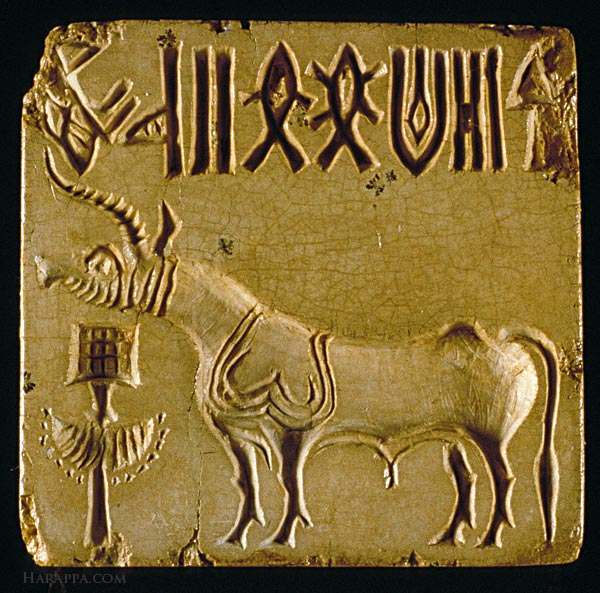
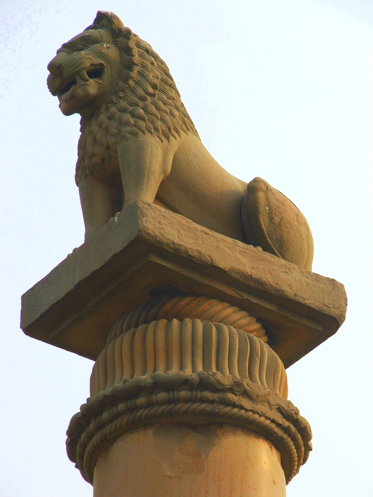
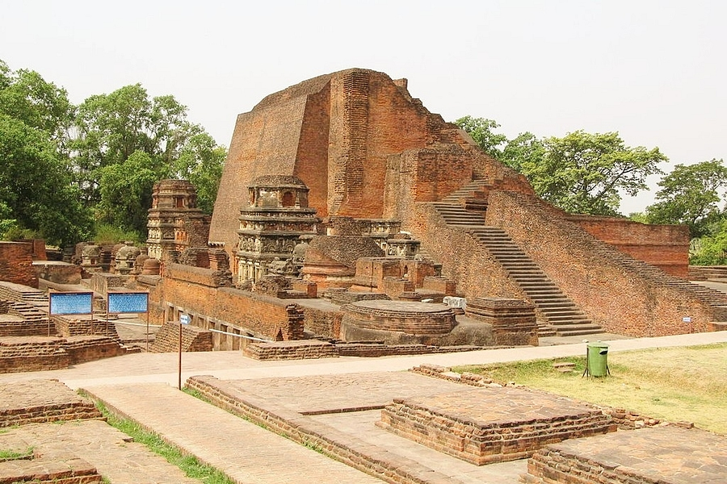
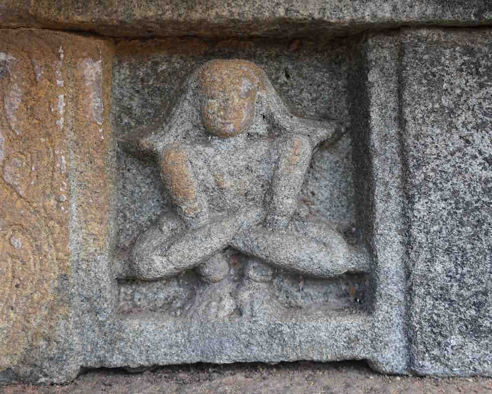
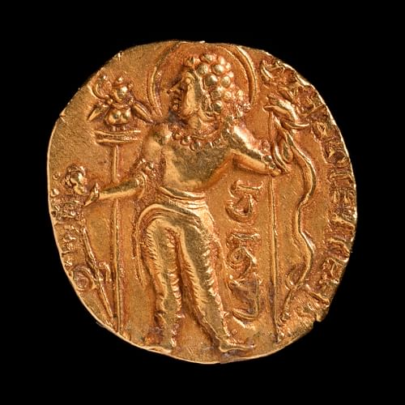
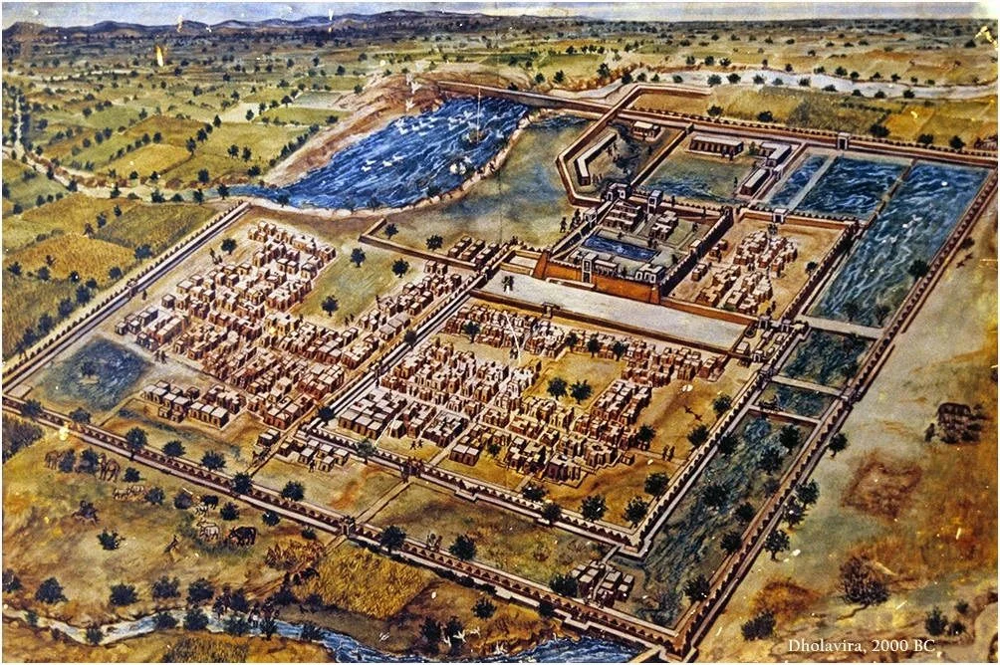

Gallery of Ancient India

🔏 Indus Valley Seal

🪵 Ashoka Pillar

🏛️ Nalanda University

🧘 Yoga Tradition

📜 Vedic Manuscript

🪙 Coin of Chandragupta Maurya

🧱 Dholavira - Indus Valley Urban Planning